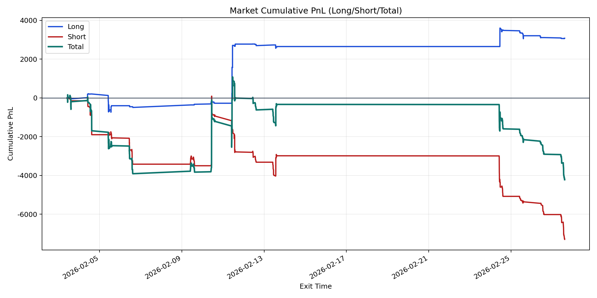
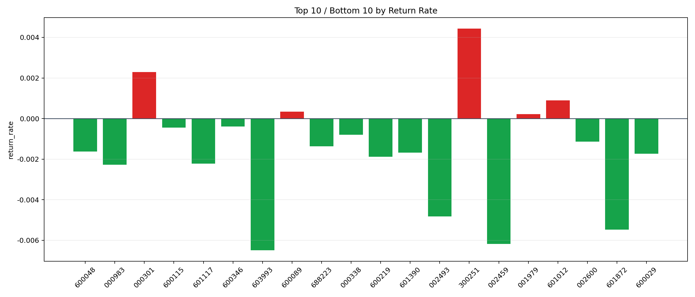

| repo_root | /home/haoranyou/data/output/alpha0.4_1w_5s_3ticks_index_filter/index_weights_300 |
|---|---|
| period_months | 1 |
| period_label | 2026-02-03_to_2026-02-27 |
| start_time | 2026-02-03 09:54:52 |
| end_time | 2026-02-27 14:42:57 |
| n_trades | 943 |
| n_symbols | 21 |
| total_pnl | -4222.688200000039 |
| long_total_pnl | 3078.9463499999842 |
| short_total_pnl | -7301.6345500000225 |
| total_entry_notional | 8858869.0 |
| long_entry_notional | 2433481.0 |
| short_entry_notional | 6425388.0 |
| total_return_rate | -0.0004766622240378584 |
| long_return_rate | 0.0012652436365847872 |
| short_return_rate | -0.0011363725505759376 |
| top_symbols_by_return | ["300251", "000301", "601012", "600089", "001979", "600346", "600115", "000338", "002600", "688223"] |
| bottom_symbols_by_return | ["603993", "002459", "601872", "002493", "000983", "601117", "600219", "600029", "601390", "600048"] |

